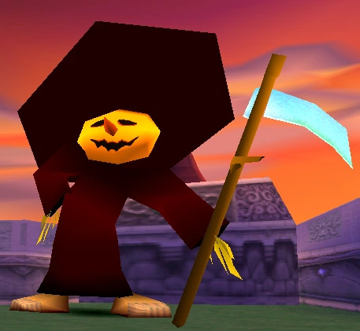
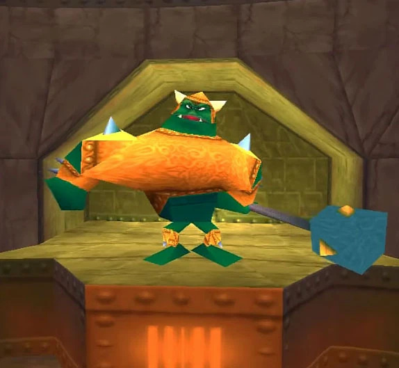

You're Spyro, a bold little dragon on a mission to rescue fellow dragons turned into crystal by the evil Gnasty Gnorc.
Glide and flame your way across vibrant worlds, collect gems, and defeat enemies in this action-packed, whimsical adventure.
It's a classic platforming experience with heaps of charm!
Good CharactersSpyroSparx Magnus |
Evil CharactersDr.ShempToasty  Gnasty Gnorc  |
Some CollectablesDragon EggSnagging these dragon eggs is key, dude. These eggs got swiped by pesky thieves, and it's up to you, as Spyro, to chase 'em down and get those eggs back. It's not just for kicks – rescuing those eggs helps you progress in the game and unlocks new areas to explore. So, it's like you're on this rad, high-speed egg hunt that's crucial for saving the day. Totally adds to the thrill of the adventure! Gems Scooping up these gems is where it's at, my dude. These shiny gems are stashed all over the place, and collecting 'em is mega important. They're like your ticket to unlocking new levels and realms, and they also score you points. Plus, some gnarly characters might ask for a certain number of gems to help you out. So, grabbing those gems is key to powering through the game and keeping the adventure rolling. It's all about racking up those sparkly scores to save the day! |